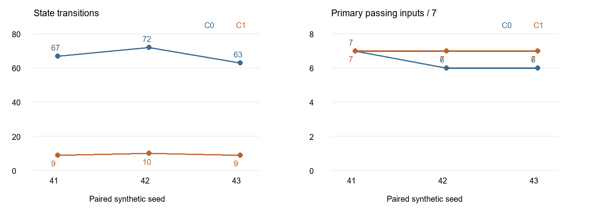

อิทธิพล แป้นอ้อย / 6752500053 | กลุ่ม: ยังไม่ระบุ | วันที่รัน 09/11/2026
ผลทั้งหมดเป็น simulation ด้วย virtual clock และ proposed course model ไม่มี learning และยังไม่ได้วัด ROS/DDS หรือการเคลื่อนไหวของหุ่นยนต์จริง
C1ควรลดการสลับstateจากnoiseแต่เพิ่มเวลารอfilter; predictionเก็บก่อนรันในPREDICTION_BEFORE_RUN.json. ใช้baselinepolicyเดียวกัน,seeds41/42/43,dt.02s,duration22s,scheduler.04s,7expectedIDsและ10allsource/trial; deadline1s. C1debounce.06s,near.20/.28m,approach.80/.95m; bounds±[.35,.25,.30]rad,slew.8rad/sเหมือนกัน
fault→normal,near→afraid,clear→normalจากทุกstate; afraidholdpositiveevents; อื่นtouch→happy,button/approach→interested; interested/happytimeout2s→normal; normalidle6s→sleepy. Priorityfault>near>clear>touch>button>approach>timeout>idle
| state | fault | near | clear | touch | button | approach | timeout | idle |
|---|---|---|---|---|---|---|---|---|
| normal | normal | afraid | normal | happy | interested | interested | hold | sleepy |
| interested | normal | afraid | normal | happy | interested | interested | normal | hold |
| happy | normal | afraid | normal | happy | interested | interested | normal | hold |
| afraid | normal | afraid | normal | hold | hold | hold | hold | hold |
| sleepy | normal | afraid | normal | happy | interested | interested | hold | hold |
normalกลางRGB60/90/140; interestedเอียงยืด.22/.18/.06RGB255/180/0; happyพยักnod=.18sin(2πt)RGB40/220/80; afraidหดก้ม−.22/−.22/−.16RGB230/30/30; sleepy0/−.15/−.20RGB50/40/100. qเป็นradนามธรรม
40pairsผ่านbaselineและgroup; ก่อนแก้7failures เช่นinterested+timeoutคืนNone แก้กลับnormal. ตารางเต็มและคำตอบครบในworksheet.md
| Condition/seed | All sources | Both | ≤1s both | No both | Max observed s | State transitions |
|---|---|---|---|---|---|---|
| C0/41 | 10 | 7 | 7 | 3 | 0.24 | 67 |
| C1/41 | 10 | 7 | 7 | 3 | 0.14 | 9 |
| C0/42 | 10 | 6 | 6 | 4 | 0.18 | 72 |
| C1/42 | 10 | 7 | 7 | 3 | 0.14 | 10 |
| C0/43 | 10 | 6 | 6 | 4 | 0.04 | 63 |
| C1/43 | 10 | 7 | 7 | 3 | 0.14 | 9 |

PrimaryC0=19/21,C1=21/21. transitionsลด58/62/54ครั้ง; C0seed42clear_01ไม่recognize,seed43clear_02no_state_change; missingไม่แทน0. C1สูงสุด.14sทุกseed,C0.24/.18/.04s จึงไม่สรุปC1ช้ากว่าเสมอ
| Input | Source | Recognized | Decision/queue | Apply | Motion | RGB | Both latency s |
|---|---|---|---|---|---|---|---|
| button_01 | 1.0 | 1.1 | 1.1 | 1.14 | 1.14 | 1.14 | 0.14 |
| touch_01 | 3.0 | 3.06 | 3.06 | 3.1 | 3.1 | 3.1 | 0.1 |
button1.00→recognize1.10→queue1.10→apply/motion/RGB1.14 ดังนั้นboth=.14s,filter=.10s,queue=.04s. near7→afraid,touch7.06policy_held; clear9→normal; fault11/12เดิมnormalจึงไม่มีonsetใหม่; idle15→sleepy; button18.06→interestedและapply18.10
Replayraw/eventsตรงbyteและSHA; หลักฐานcomparison/metrics.json,events/rawCSV,config,manifest,source_snapshotและanalysis_validation.json. policySHA=0be3de88fc5d9900…;Python/คำสั่งจริงในRUN_MANIFEST.json. รันซ้ำจากlab_06ด้วย python lab06.py --policy student --condition all --repeats 3 --output-dir results/reproduce_01
เป็นvirtualcommandonsetเท่านั้น ก่อนจริงต้องcalibratejoint/clockและวัดencoder+photodiodeร่วมtrigger; softwareboundsไม่แทนE-stop/driverwatchdog.FSMคงที่ไม่ใช่learning. อ้างอิงREADME.md,course_model.pyและworksheet.md